Running a conference from the call for participation to the printed schedule
Audience: conference organisers, programme coordinators and reviewers
Covers: settings, call for participation, people, sessions, reports, schedule, reviews and e-mail
Examples in this manual come from the demo conference demo2025, signed in as an orga user.
Contents
Getting started Signing in, roles, the main navigation, switching between conferences
Settings The conference itself: days, rooms, themes, keywords, review metrics, notification texts, team
Call for Participation Opening the CfP and what a speaker sees when they submit
People Speaker records, availability, expenses, travel, audience feedback
Sessions The submission list, editing a session, the state workflow, bulk actions
Reports Ready-made queries and statistics you will need before and during the event
Schedule Placing sessions in the grid, availability conflicts, publishing and exports
Reviews Review metrics, the reviewer's queue, reading the results
Mail templates Writing a template, placeholders, sending it, and the automatic notifications
Appendix A - Placeholder reference · Appendix B - Session states · Appendix C - Roles and permissions
Chapter 1
Getting started
Everything in frab happens inside one conference. Before you touch any settings, it helps to know how you sign in, what your role allows you to do, and how to move around.
1.1 Signing in
Open the address of your frab installation and you land on the login page. Enter your e-mail address and password and press Log in.
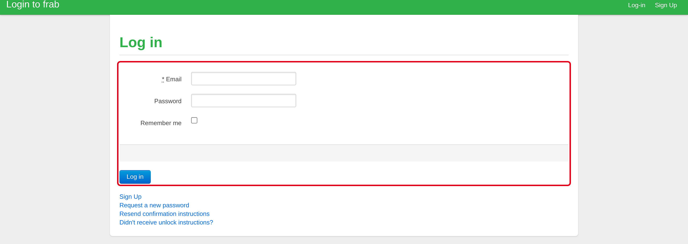
Figure 1.1 - The login page. If you have never used frab, use Sign Up to create an account, or Request a new password if you forgot yours.
Demo credentials
In the demo installation every account uses the password test123. The examples in this manual use orga@example.org (an organiser) and reviewer@example.org (a reviewer).
1.2 Roles: who can do what
frab has two layers of permissions. Your global role decides whether you are a plain submitter or part of the crew. Your conference role decides what you may do inside one specific conference. A person can hold only one role per conference.
Role
What it means in practice
Submitter
A speaker. Sees only the Call for Participation area: their own profile, availability and submissions.
Reviewer
Sees the list of submissions and can score them. Cannot change the schedule, the settings or send mail.
Coordinator
Everything a reviewer can do, plus editing sessions and people, and moving sessions through the workflow.
Orga
Full control of one conference: settings, call for participation, schedule, reports, mail templates, team members.
Admin
A global role. Same rights as orga, in every conference, plus deleting conferences.
This manual is written for an orga user. Where a screen is only visible to a different role, it is called out.
1.3 Choosing a conference
The Conferences list shows every conference you have access to. Click one to enter it - from that moment on, every menu entry refers to that conference.
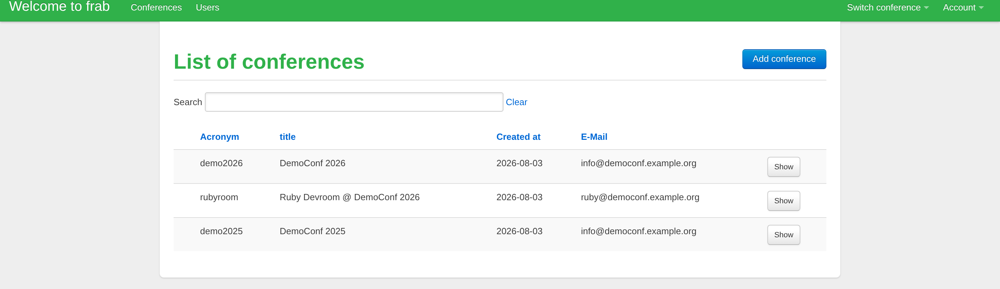
Figure 1.2 - The conference list. Use New conference to start a new edition; the fastest way is to copy the settings of last year's conference and then adjust the dates.
Once you are inside a conference you can jump to another one at any time with Switch conference in the top right corner.
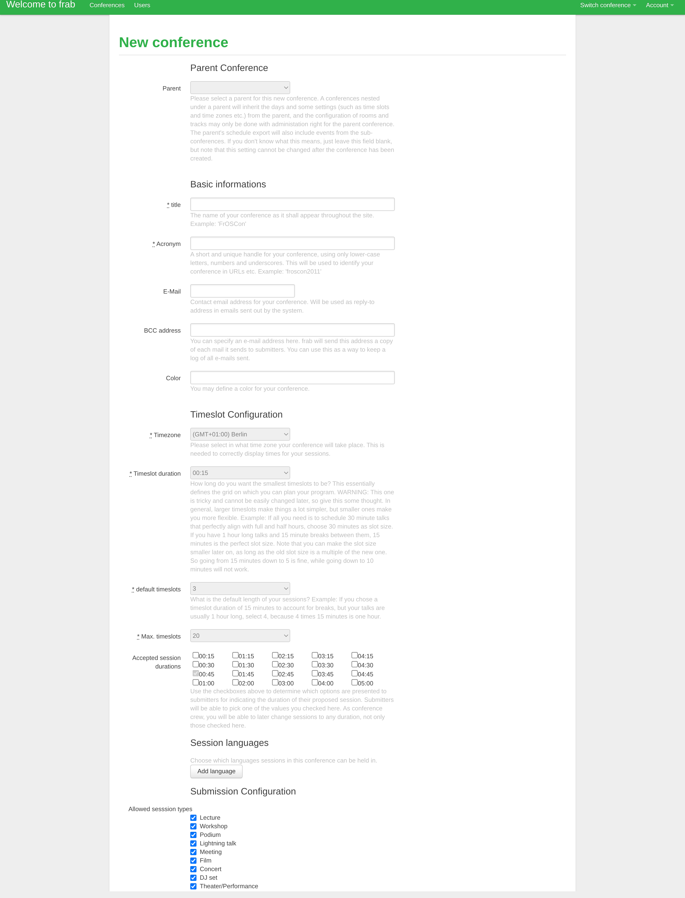
Figure 1.3 - Creating a conference. Only the title, the acronym and the time settings are required; everything else can be filled in later. A conference can also have a parent, which is how sub-conferences and devrooms are modelled.
1.4 The dashboard and the main menu
The first page of a conference is a dashboard: recent changes made by your team, and live statistics about the submissions.
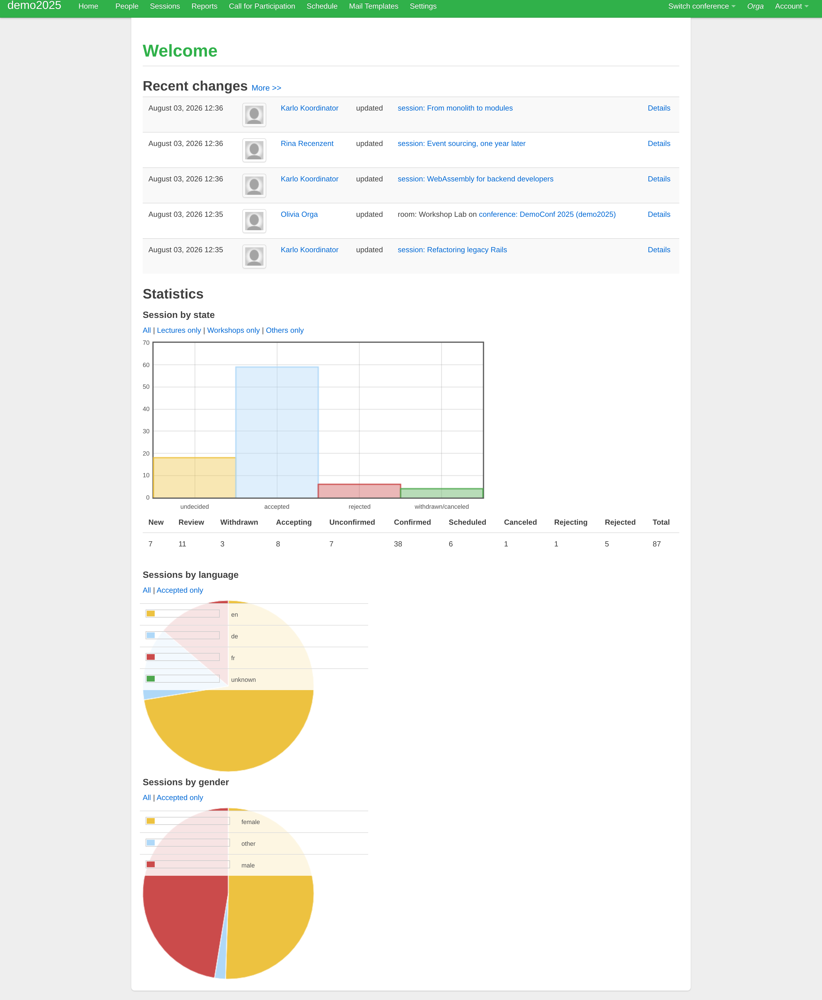
Figure 1.4 - The conference dashboard. The Recent changes box is the quickest way to see what your colleagues did since you last looked; More >> opens the full history.
The green bar at the top is the main menu. It is the same on every page:
Home
The dashboard you see above.
People
Everyone involved in this conference: speakers, submitters and crew.
Sessions
All submissions, in every state. This is where you spend most of your time.
Reports
Ready-made lists and statistics.
Call for Participation
The submission window and the welcome text speakers read.
Schedule
The grid where sessions get a room and a time.
Mail Templates
Reusable e-mails and the tool that sends them.
Settings
Everything about the conference itself.
Vocabulary
frab calls a submission a session (a talk, a workshop, a lightning talk...). A subject area is a theme (elsewhere called a track), and a free-form label you can attach to sessions is a keyword. This manual uses the words as they appear on screen.
Chapter 2
Settings
Set the conference up once, properly, and everything that follows - submissions, the schedule, the exports - falls into place. This is the first thing to do for a new conference.
Open Settings in the main menu. The page is split into tabs; each tab is saved separately with its own Save button at the bottom.
The first tab holds the identity of the conference and the time grid everything else is built on.
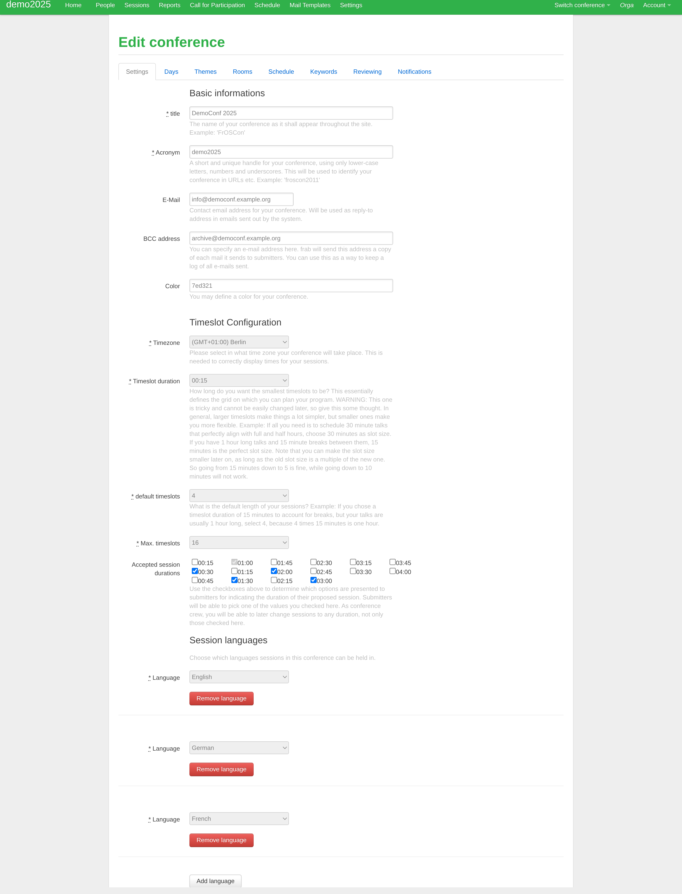
Figure 2.2 - The Settings tab. Each field has an explanation underneath it; the ones that matter most are described below.
Field
What to enter
Title
The full name of the conference as the public will see it, e.g. DemoConf 2025.
Acronym
A short, unique, lower-case handle - it becomes part of every URL (/demo2025/...). Choose it once and do not change it afterwards.
E-Mail
The address speakers should reply to. frab uses it as the reply-to of every mail it sends.
BCC address
Optional. Every mail frab sends is copied here, which gives you a complete archive of what went out.
Color
A hex colour used to tint the conference in the interface.
Timezone
The time zone the conference takes place in. All times you see and enter are in this zone.
Timeslot duration
The smallest step of the schedule grid, usually 15 minutes.
Default / Max. timeslots
The default and maximum length of a session, counted in timeslots. With 15-minute slots, 4 means one hour.
Accepted session durations
The durations a speaker may pick from in the submission form. As crew you can always set any duration later.
Session languages
The languages a session may be held in. Add one row per language.
Decide the timeslot duration early
The timeslot duration defines the whole grid. You can make it smaller later only if the old value is a multiple of the new one (15 → 5 is fine, 15 → 10 is not). Fifteen minutes suits almost every conference.
2.2 Days
Add one row per conference day, with the time the programme starts and the time it ends. These rows create the columns of the schedule grid and the day tabs on the public schedule.
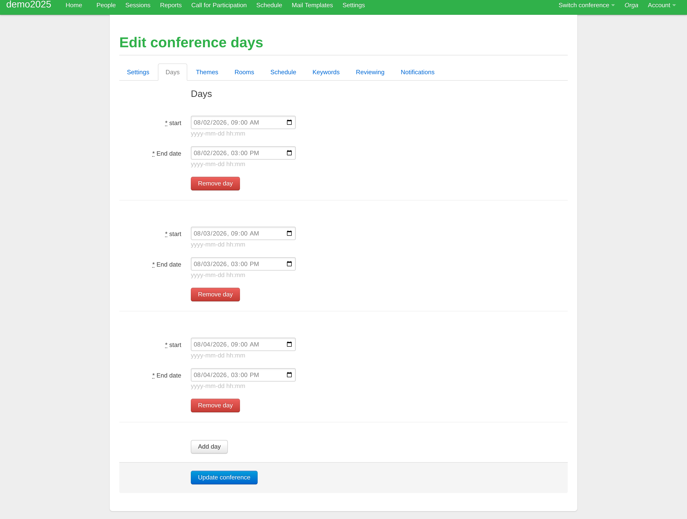
Figure 2.3 - Three conference days. A day may run past midnight - just set the end time accordingly.
2.3 Rooms
Every room you want to schedule sessions in needs a row here. Size is the seating capacity, and Rank decides the left-to-right order of the columns in the schedule and on the public page.
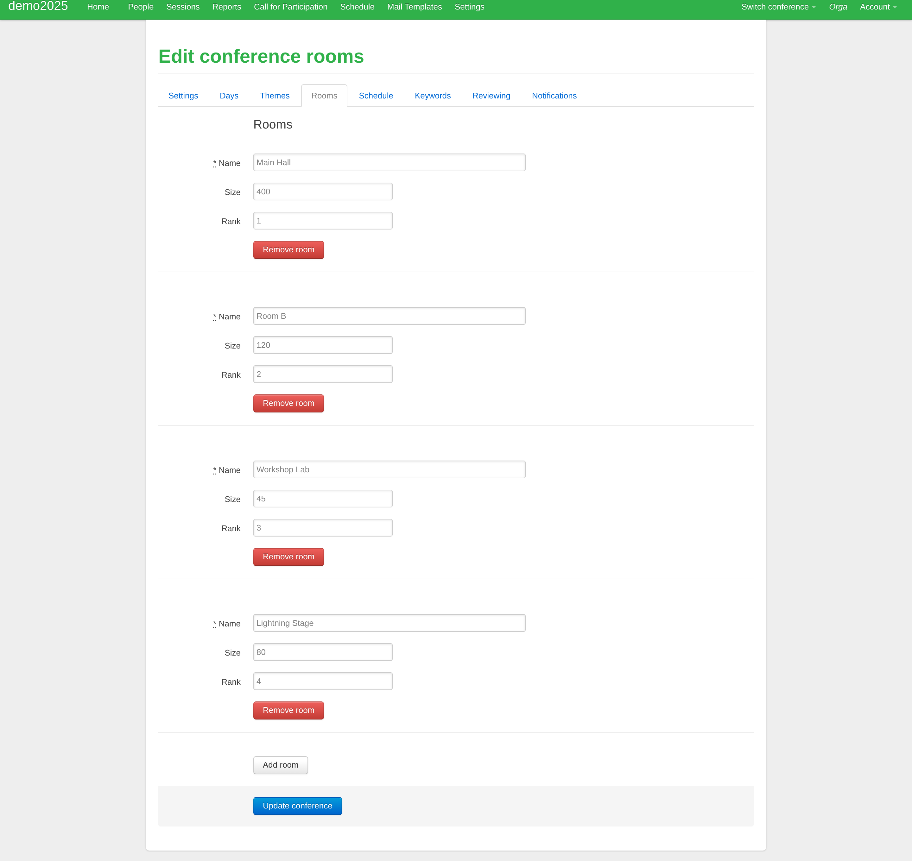
Figure 2.4 - Rooms. Give the main stage rank 1 so it appears first everywhere.
2.4 Themes
A theme is the subject area of a session (Backend, Security, Community...). Each theme gets a colour, which is used for the small square in front of every session in the schedule grid and on the public schedule.
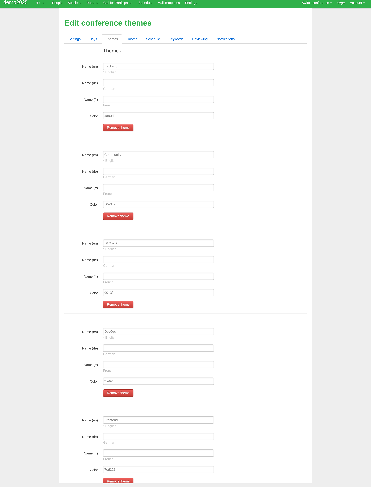
Figure 2.5 - Themes and their colours. Keep the list short - five to eight themes is usually enough to be useful for the audience.
2.5 Keywords
Keywords are your own labels for internal use, for example Needs translation, Streaming ok or Beginner friendly. Each keyword you define here can be set per session, and you can then filter and sort the session list by it.
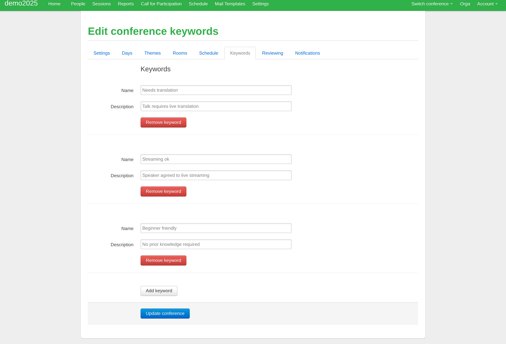
Figure 2.6 - Keywords. The description is shown to the crew as a hint, so write it as a question you can answer with yes or no.
2.6 Reviewing
Here you define the criteria your reviewers score a submission on. Every criterion you add becomes a row in the review form and a sortable column in the review overview.
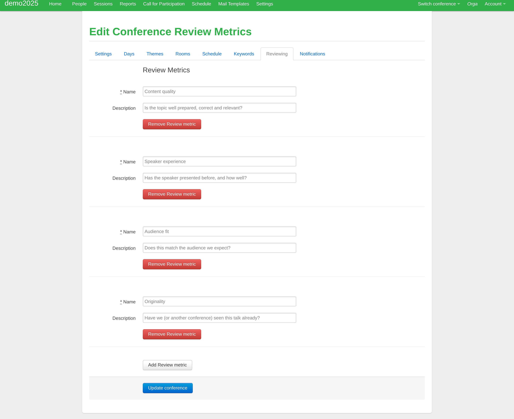
Figure 2.7 - Review metrics. The description appears next to the score buttons, so phrase it as a question ("Does this match the audience we expect?").
Set the metrics before reviewing starts
Reviews already given are not re-scored when you add a metric later - those older reviews will simply have no value for the new criterion. Agree on the criteria with your team before you open the review phase.
2.7 Schedule settings
The Schedule tab controls what the public sees: whether the schedule is published at all, the version number of the current release, an intro text shown above the schedule, and custom CSS if you want the published pages to match your website.
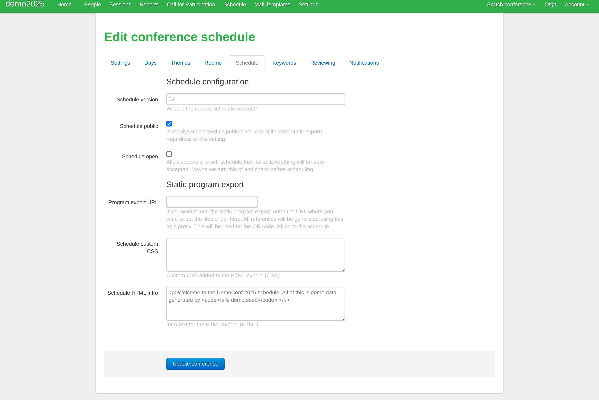
Figure 2.8 - Schedule settings. Keep Schedule public switched off until you are happy with the programme.
2.8 Notification texts
The Notifications tab holds the three standard letters that go to speakers - the acceptance, the rejection and the schedule announcement - and the buttons that release them to everybody at once. Because this is where most of your speaker communication happens, it is described in detail in chapter 9.6 rather than here.
2.9 The team
Open Account → Conference users to see who works on this conference and in which role, and to add colleagues.
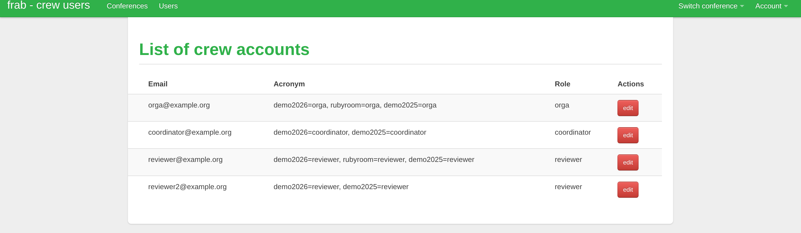
Figure 2.9 - The crew of the conference. To add someone, they need a frab account first; then assign them a role here.Chapter 3
Call for Participation
The call for participation is the public front door of your conference. It defines when people may submit, what they read before they do, and it is the only part of frab most of your speakers will ever see.
3.1 Opening the call
Choose Call for Participation in the main menu and then Edit.
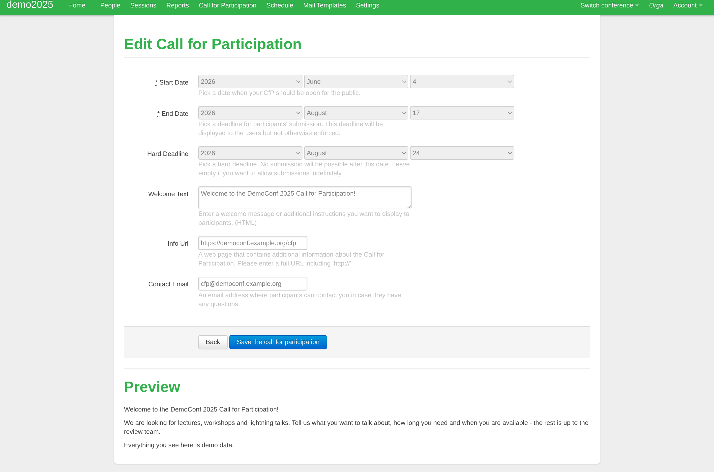
Figure 3.1 - The call for participation form.
Field
What it does
Start date
The day the submission form opens.
End date
The day it closes. After this date submitters can still sign in and see their submissions, but not create new ones.
Hard deadline
The date you communicate as final. Useful when you announce a deadline and then quietly keep the form open a few days longer.
Info URL
A link to your own website with the long version of the call.
Contact email
Where questions about the call should go.
Welcome text
The text shown on the first page a speaker sees. Explain what you are looking for, how long sessions may be, and when they will hear back from you.
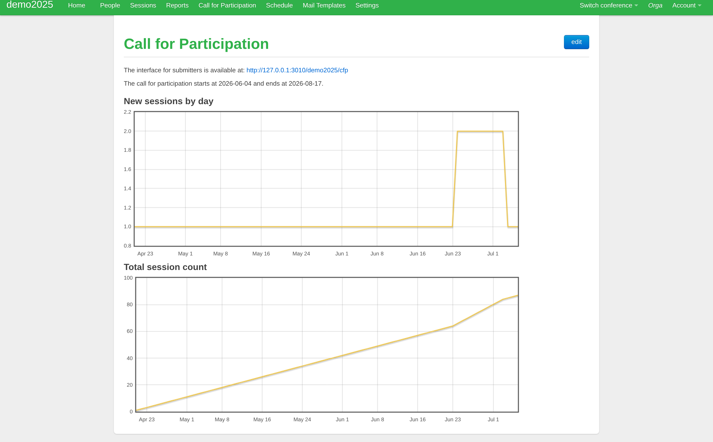
Figure 3.2 - The saved call, as the crew sees it.
The address to publish
Send speakers to <your-frab>/<acronym>/cfp - for the demo conference that is /demo2025/cfp. People who do not have an account yet can register straight from there.
3.2 What a speaker sees
It is worth walking through the submission once yourself, with a test account, before you announce the call. This is the path a speaker takes.
Step 1 - the welcome page
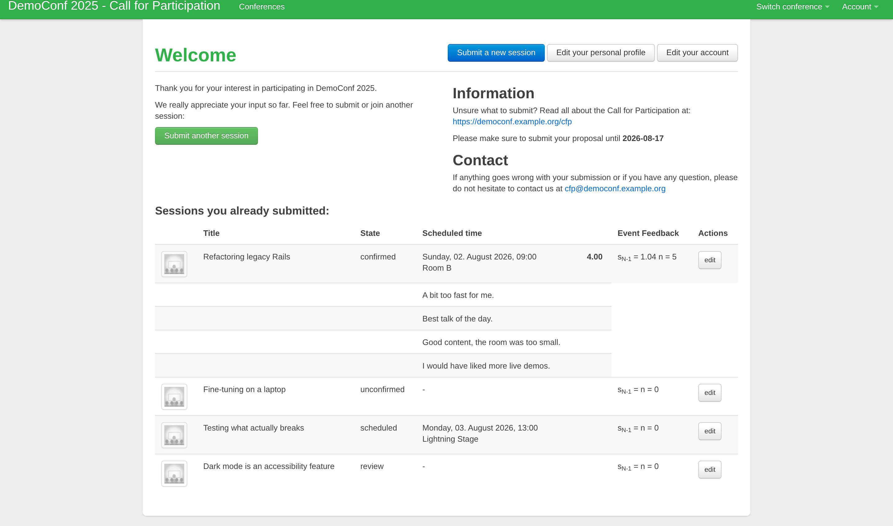
Figure 3.3 - The welcome page shows exactly the text you entered in the Welcome text field.
Step 2 - the speaker profile
Before submitting, the speaker fills in their profile: public name, a short biography, a photo, links and contact details. Everything marked as public ends up on the speaker page of the published schedule.
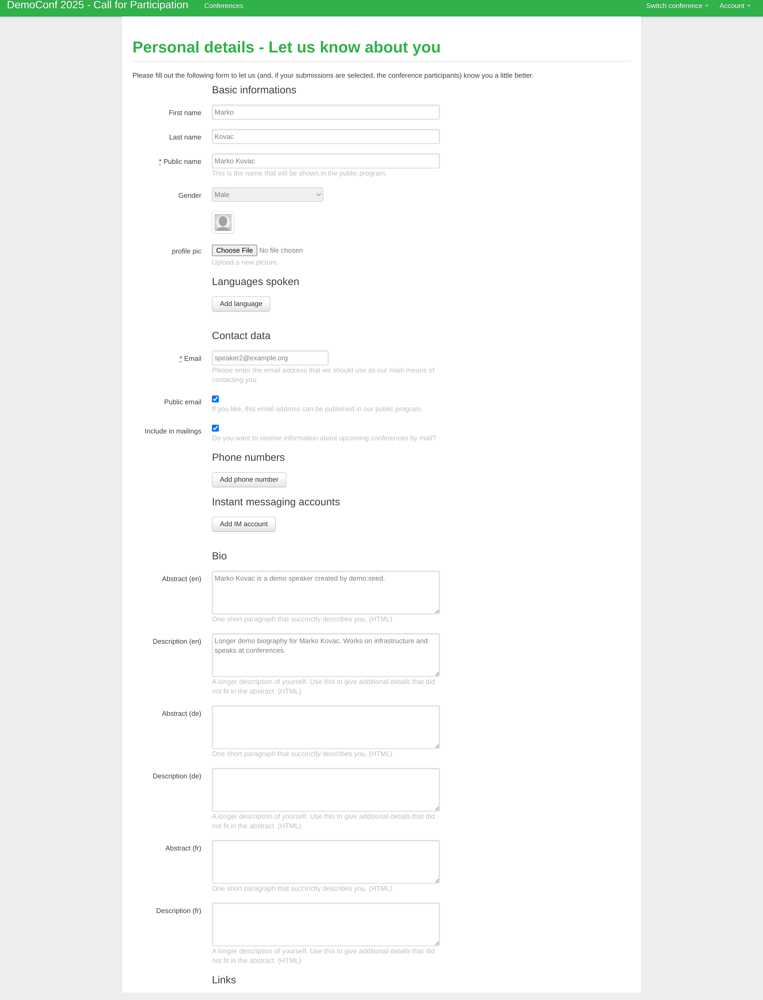
Figure 3.4 - The speaker profile. The public name is the name that appears in the programme.
Step 3 - availability
The speaker states, per conference day, when they can be on stage. This is the information your schedule later warns you about, so encourage people to fill it in - it saves a lot of e-mail.
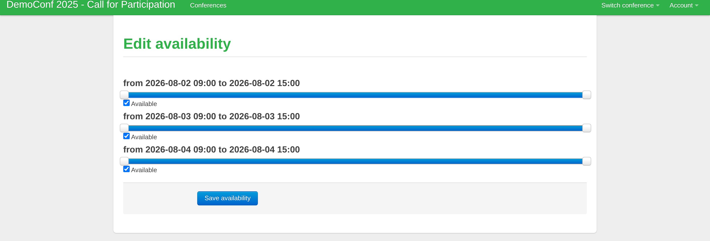
Figure 3.5 - One row per conference day. Drag the two handles to the first and last hour the speaker is available, or clear the Available checkbox for a day they cannot attend at all. Finish with Save availability.
Step 4 - the submission
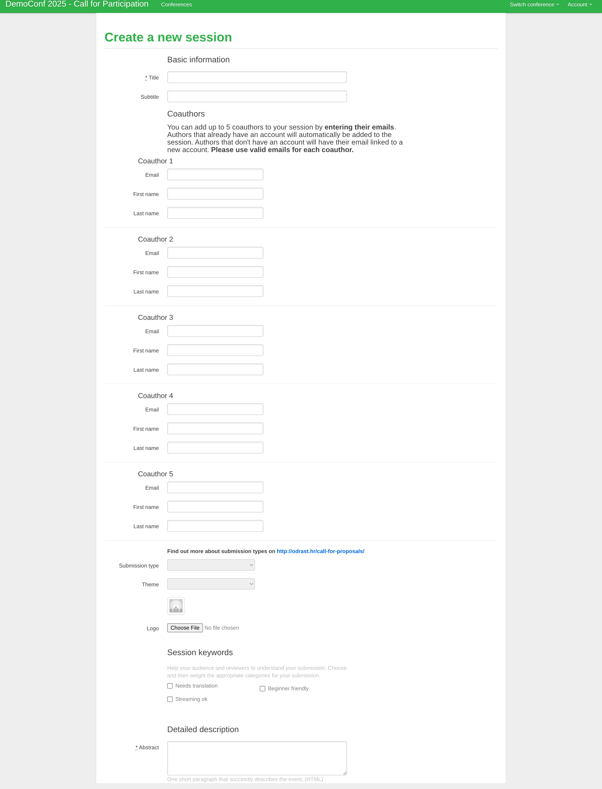
Figure 3.6 - The submission form. Title, subtitle, session type, duration, language, abstract and description; the durations offered here are the ones you ticked in Accepted session durations (chapter 2.1).
Step 5 - following the submission
Figure 3.7 - The speaker's own list. Once you accept a session, this is also where they confirm it (or withdraw).
Tip
Keep one submitter test account for yourself. Whenever you change the call, the accepted durations or a notification text, log in with it and check what a speaker actually sees.
Chapter 4
People
Every speaker, co-speaker and crew member is a person record. It is the place where you find contact details, when someone is available, what they need reimbursed and how the audience rated them.
4.1 Finding people
People in the main menu opens the list of everybody involved in the current conference. The tabs above the table narrow it down.
Figure 4.1 - The people list. Use the search box for a name or an e-mail address; click a column header to sort.
People - everyone involved in this conference.
All people - the whole database, including people from other conferences. Use this before creating someone by hand, so you do not end up with duplicates.
Speakers - only those actually speaking here.
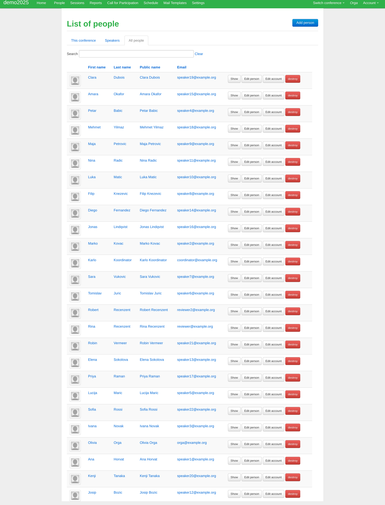
Figure 4.2 - All people searches the whole database, across conferences. Always look here before you create a person by hand.
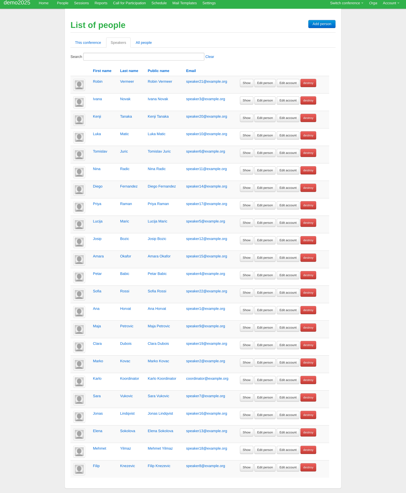
Figure 4.3 - The speaker list is the one to use for badges, for the info desk and for last-minute phone calls.
4.2 The person page
Clicking a name opens their page. The tabs at the top - Profile, User account, Availability, Expenses, Transport needs, Feedback - hold everything frab knows about them.
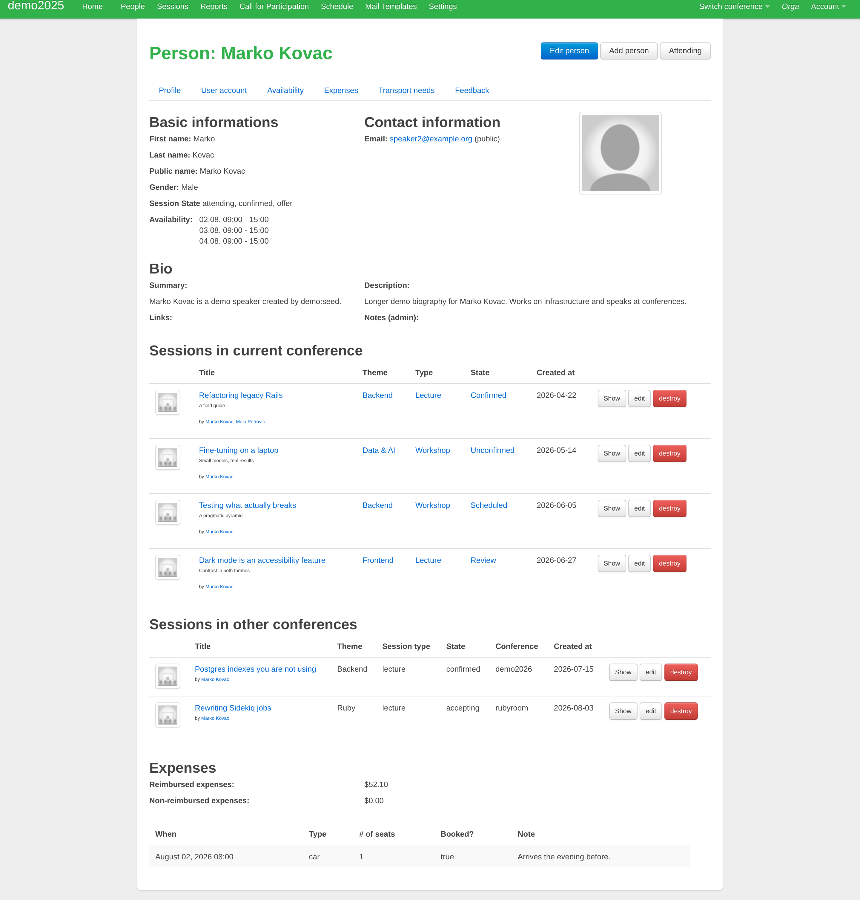
Figure 4.4 - A speaker page: contact details, the sessions they are in for this conference, and the audience feedback per session.
Use Edit person to correct names, the public biography, links or the internal note. The note is only visible to the crew - it is the right place for "invited speaker, travel is paid by us" or "asked not to be scheduled before noon".
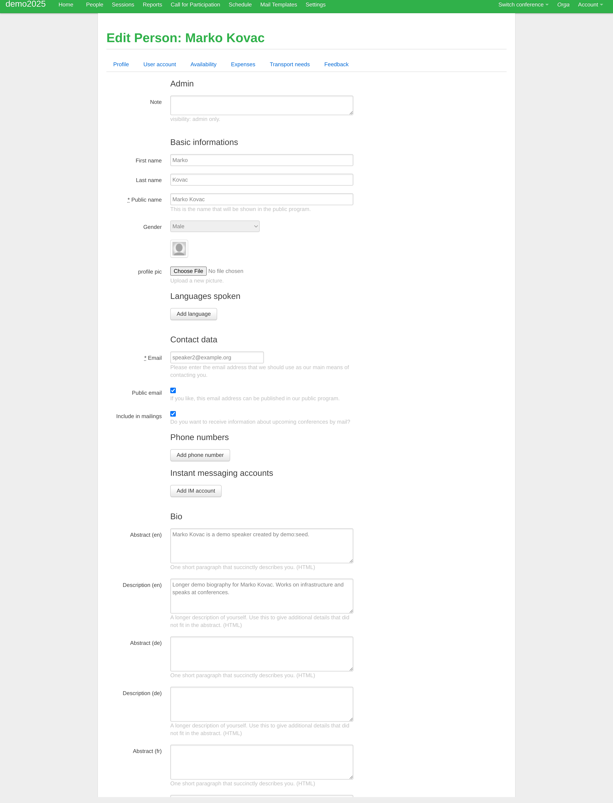
Figure 4.5 - Editing a person.
4.3 Availability
Speakers normally fill their availability in themselves (chapter 3.2), but you can enter or correct it for them - for instance after a phone call. Open the person and choose the Availability tab.
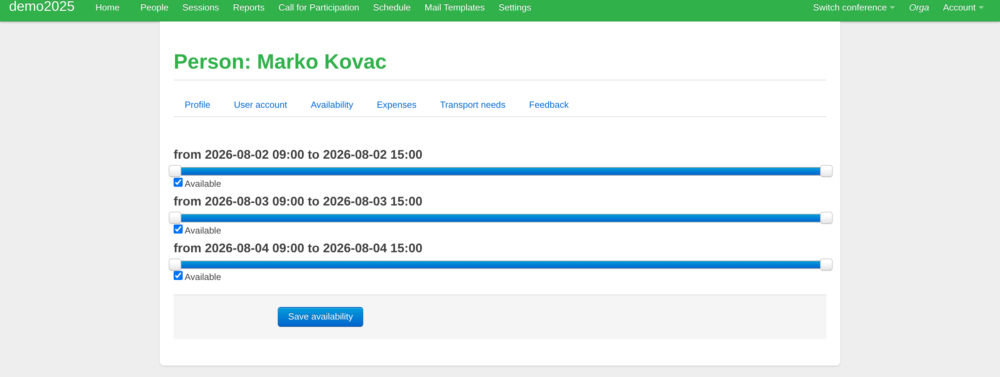
Figure 4.6 - The same slider the speaker uses, in the crew interface. One row per conference day.
Why this matters
The schedule grid marks a session orange as soon as one of its speakers is scheduled outside their availability, or has not stated any availability at all. Getting this data in early is the cheapest way to avoid a broken programme. The report speakers without availabilities (chapter 7) lists everyone you still need to chase.
4.4 Expenses and travel
If you reimburse speakers, record each cost on the Expenses tab and tick it off once it has been paid. The report people with non-reimbursed expenses then gives you the outstanding list with a total.
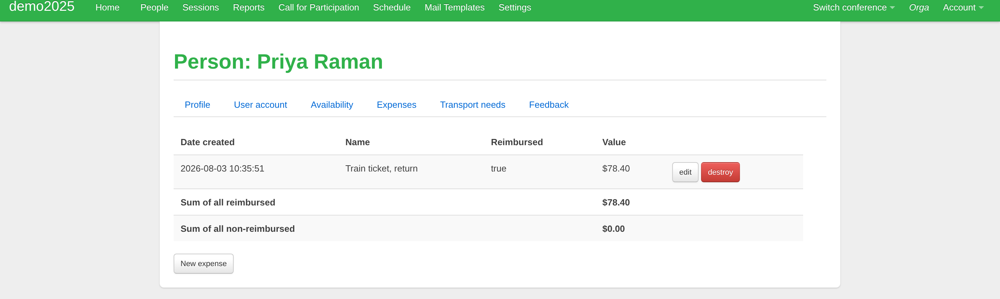
Figure 4.7 - Expenses. Each row has a description, an amount and a reimbursed flag.
The Transport needs tab records arrivals and departures: the time, the means of transport, how many seats are needed, and whether the trip has already been booked.
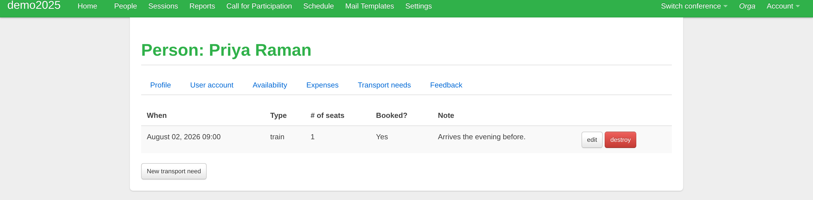
Figure 4.8 - Transport needs. Everything entered here shows up in the transport report used by the drivers on site.
These tabs can be switched off
Expenses and transport needs only appear if they are enabled in the conference settings. If you do not reimburse anybody, leave them off and the interface stays simpler.
4.5 Feedback about a speaker
The Feedback tab collects everything the audience wrote about the sessions of that person, with the star ratings.
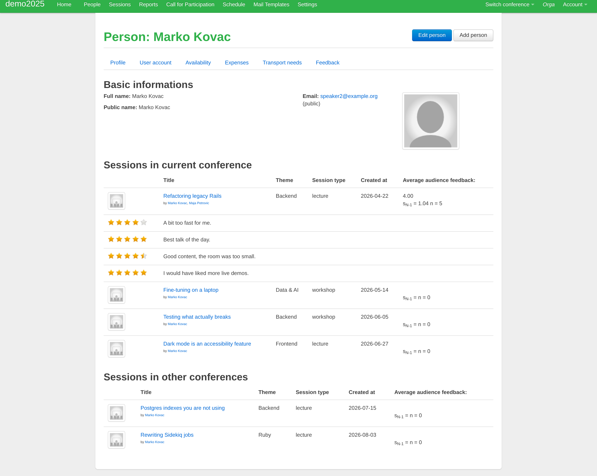
Figure 4.9 - Audience feedback per session, including the average and the number of votes.Chapter 5
Sessions
The session list is the heart of frab. Every submission lives here and moves through a fixed workflow, from a fresh proposal to a confirmed slot in the programme.
5.1 The session list
Open Sessions. The list shows every submission with its theme, type, state and submission date.
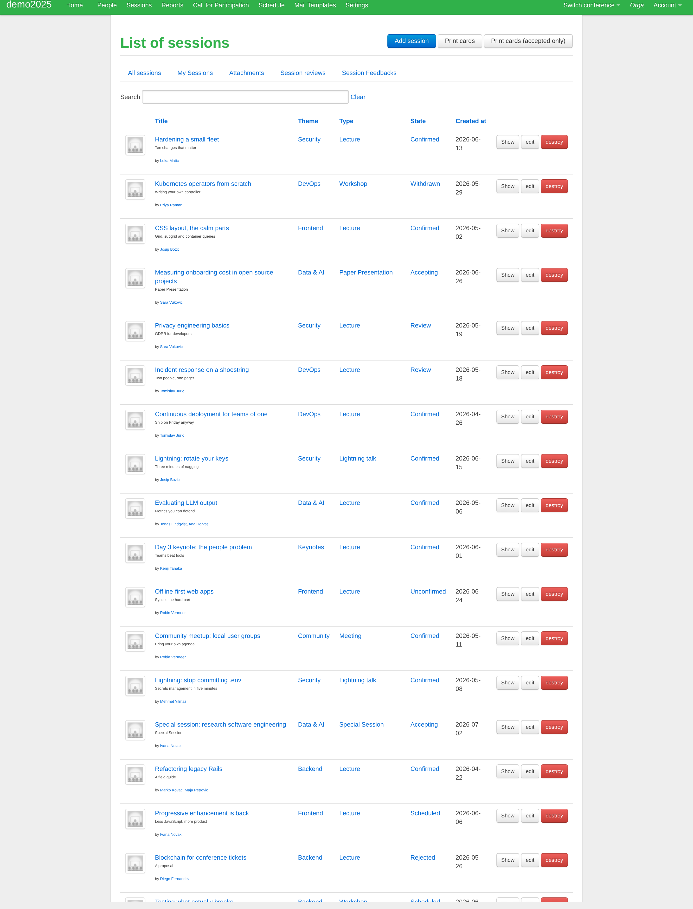
Figure 5.1 - The session list. A coloured row is a hint, not an error: red means the submitter still owes peer reviews, yellow means the reviewers disagree strongly about this session.
The tabs above the table switch between views of the same data:
All sessions - everything.
My Sessions - the ones you are involved in.
Attachments - every file speakers uploaded, in one list.
Session reviews - the review overview (chapter 8).
Session Feedbacks - what the audience wrote.
Searching and filtering
The Search box does a full-text search over titles, subtitles and abstracts. For anything more precise, click the small filter icon in a column header: it opens a dialog where you tick the values you want to keep.
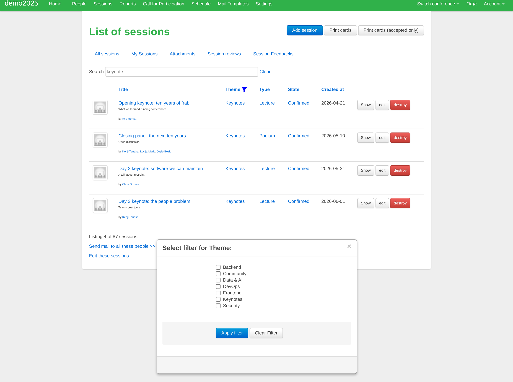
Figure 5.2 - Filtering by column. Filters combine, so you can ask for "all workshops in the DevOps theme that are still unconfirmed"; active filters appear as removable chips above the table.
Filters carry over
The filter you set is part of the address of the page. That means you can bookmark a filtered list, share the link with a colleague, and - most usefully - send an e-mail to exactly the people in that filtered list (chapter 9.5).
5.2 Looking at one session
Click a title to open the session.
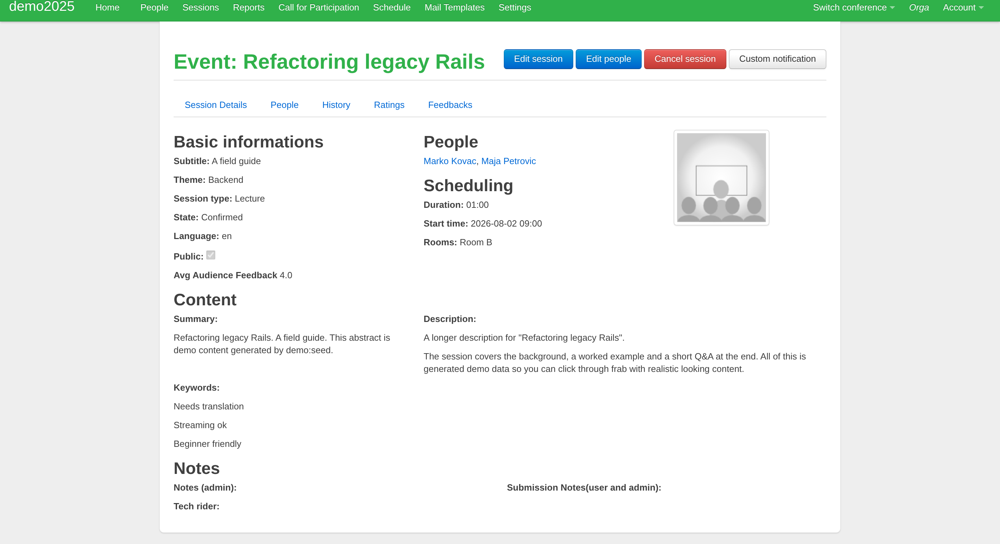
Figure 5.3 - A session page: the basics on the left, people and scheduling in the middle, and the buttons for the next step in the top right.
The tabs are Session Details, People, History, Ratings and Feedbacks. The buttons in the top right change with the state of the session - Edit session, Edit people, the next workflow step, and Custom notification for a one-off e-mail to this speaker (chapter 9.4).
5.3 Editing a session
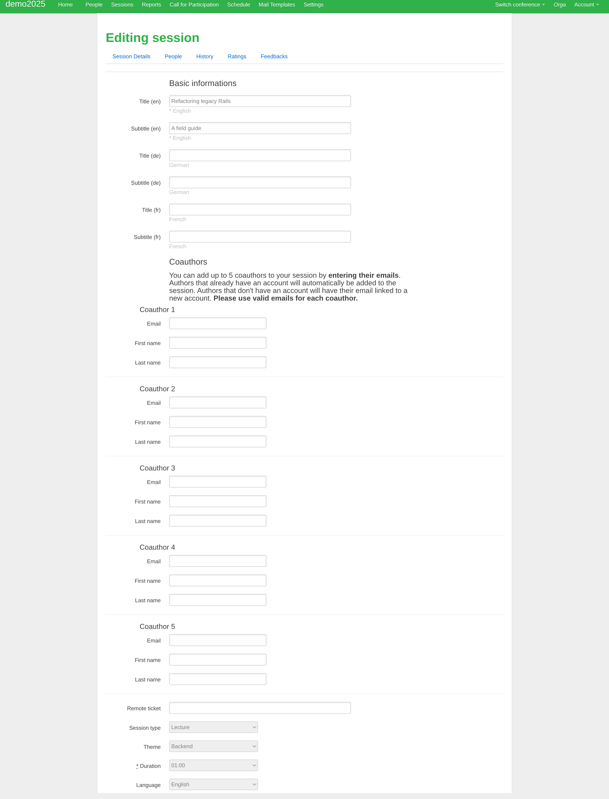
Figure 5.4 - The edit form. Fields worth knowing are listed below.
Field
Notes
Title / Subtitle
Exactly as they will appear in the programme. Fix typos here, not by asking the speaker.
Theme
From the list you defined in the settings. Drives the colour in the schedule.
Session type
Lecture, workshop, lightning talk, podium, meeting, other - plus the academic types Paper Presentation, Special Session and Non-academic Session. The type is not cosmetic: only the two academic types are offered to reviewers (chapter 8.3), and the three "Accepted ..." reports look for them by name.
Duration
In timeslots. As crew you are not limited to the durations offered to submitters.
Public
Untick to keep a session out of the published schedule (internal meetings, crew briefings).
Do not record
Marks the session for the video team.
Keywords
Your own labels from the settings.
Note (admin)
Internal, crew only.
Submission notes
Written by the speaker, visible to both sides - this is where "I can only attend on the last day" ends up.
Tech rider
Technical requirements: microphones, adapters, a second screen.
Coauthors
Up to five co-authors, entered by e-mail address plus first and last name. People who already have an account are attached to the session automatically; the others get an account linked to their address. Use valid addresses - this is how co-authors receive the mails you send from the session list.
Adding a session by hand
Not every session comes through the call for participation - keynotes you invited, sponsor slots and crew meetings are usually entered by you. Use Add session at the top of the session list; the form is the same as in figure 5.4.
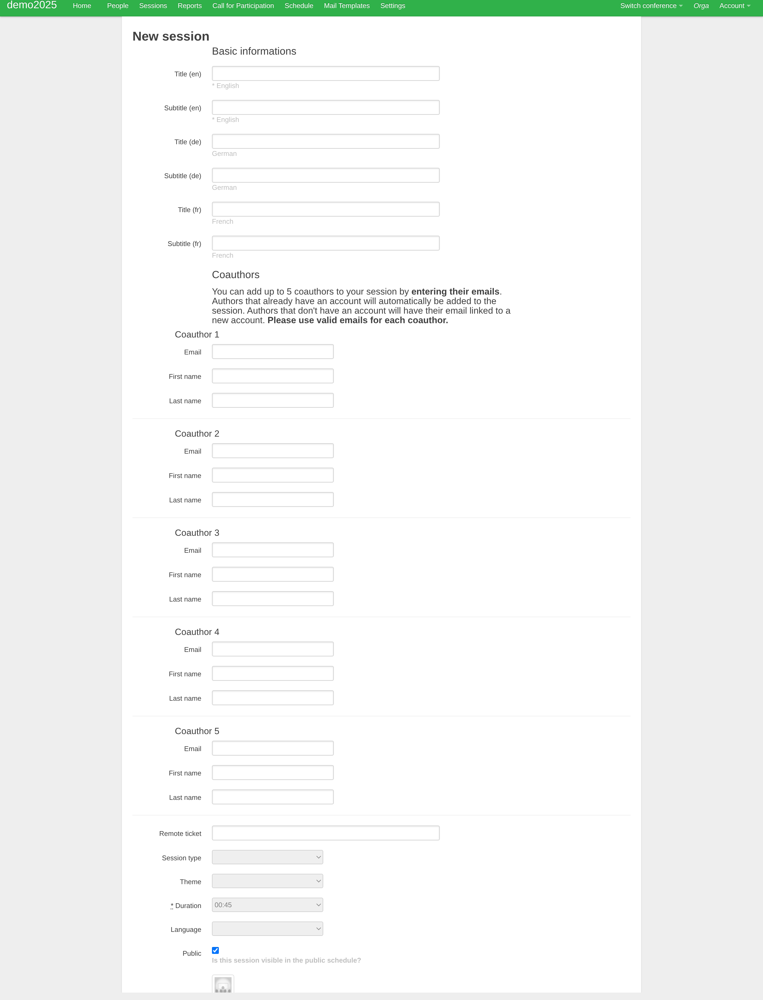
Figure 5.5 - Creating a session yourself. Remember to attach the speaker afterwards with Edit people, otherwise the session will show up in the "sessions without speaker" report.
People on a session
Edit people manages who is attached to the session and in which role - submitter, speaker, moderator or coordinator - and the state of each of them.
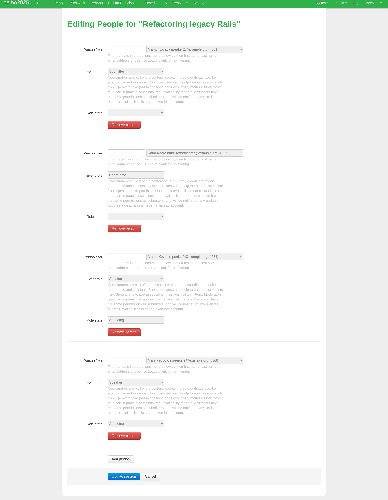
Figure 5.6 - Adding a co-speaker. The role state (offer, confirmed, declined, attending, ...) tracks each person separately; setting a speaker to attending is how the info desk marks that someone has arrived.
5.4 The workflow
Every session has a state. You never edit the state directly - you press the button for the next step, and frab does the rest (creating confirmation links, sending the notification, assigning a coordinator).
State
Meaning
Usual next step
New
Just submitted, nobody has looked at it yet.
Start review
Review
In the review phase, reviewers are scoring it.
Accept or Reject
Unconfirmed
Accepted; the speaker has been told and now has to confirm.
Wait, or Confirm on their behalf
Confirmed
The speaker confirmed. Ready to be scheduled.
Place it in the schedule
Scheduled
Confirmed and the schedule announcement has gone out.
-
Rejected
Not part of the programme; the speaker has been told.
-
Withdrawn
The speaker pulled the submission back.
-
Canceled
Dropped after it had already been accepted or confirmed.
Fill the gap in the schedule
Accepting / Rejecting
Decided, but the mail has not been sent yet. Only used when bulk notification is switched on.
Release the letters from Settings → Notifications
Sending all decisions at once
With bulk notification enabled in the settings, accepting a session parks it in accepting instead of mailing the speaker immediately. You work through the whole programme in peace and then release every acceptance and rejection together from Settings → Notifications (chapter 9.6). Without it, each decision mails the speaker the moment you press the button.
5.5 Working on many sessions at once
Filter the list down to the sessions you mean, then use the two links under the table.
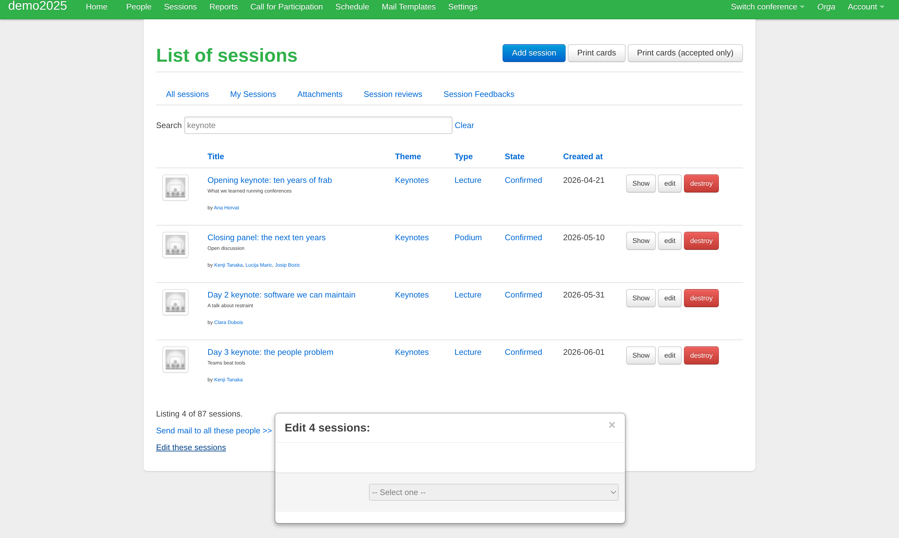
Figure 5.7 - Edit these sessions applies one change - a theme, a state, a duration - to every session currently in the list. The dialog tells you how many sessions are affected.
Check the count first
A bulk edit acts on the filtered list, not on a selection of rows. Read the "Edit N sessions" heading before you confirm - if N is larger than you expected, close the dialog and narrow the filter.
5.6 Attachments, history and feedback
The Attachments tab of the session list gathers every file speakers uploaded - proposals, slides, posters - in one place, so you do not have to open sessions one by one.
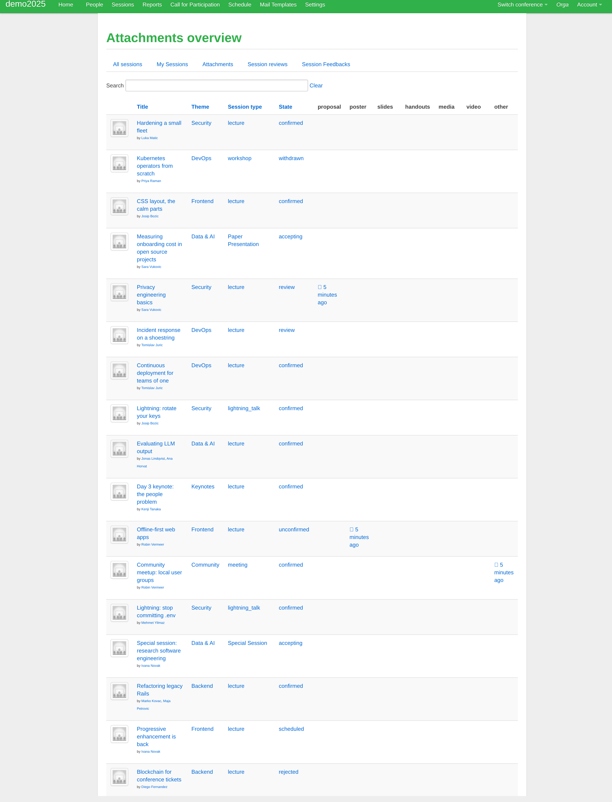
Figure 5.8 - All uploads of the conference.
Every change to a session is recorded. The History tab of a session shows who changed what and when; Home → Recent changes shows the same information for the whole conference.
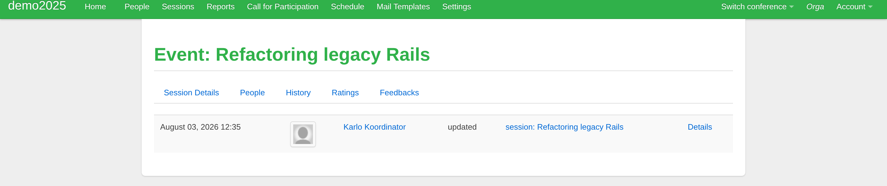
Figure 5.9 - The history of a single session: every field that changed, with the old and the new value.
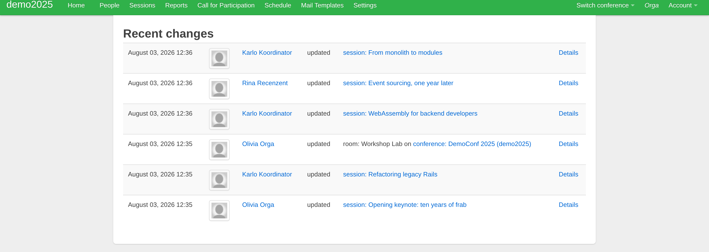
Figure 5.10 - The change log. Invaluable when two coordinators work on the programme at the same time.
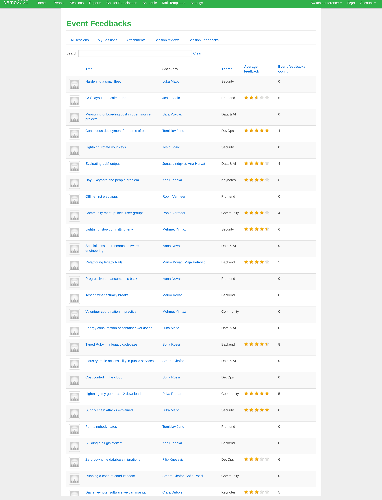
Figure 5.11 - Audience feedback per session, if feedback is enabled for the conference.Chapter 6
Reports
Reports are ready-made questions about your data. Most of them exist to catch problems before the audience does - a session without a speaker, a speaker without availability, a bill nobody paid.
6.1 The report index
Reports in the main menu lists everything available, grouped into Query events, Query speakers, Statistics and Transport needs.
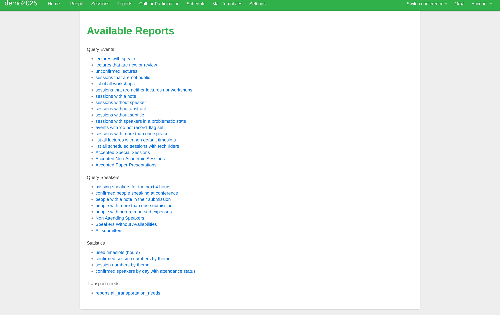
Figure 6.1 - The available reports.
6.2 Reports about sessions
Report
Use it to
sessions without speaker
Find submissions where nobody is actually going to be on stage.
sessions without abstract / without subtitle
Find the gaps before the programme goes to print.
sessions that are not public
Check that nothing was hidden from the schedule by accident.
sessions with a note
Work through everything you or the speakers flagged.
sessions with speakers in a problematic state
Catch sessions whose speaker declined or never answered.
sessions with more than one speaker
Plan microphones and stage setup.
list all scheduled sessions with tech riders
Hand the technical requirements to the AV team.
sessions with 'do not record' flag set
Tell the video team which rooms to skip.
lectures that are new or review, unconfirmed lectures
See what is still undecided or still waiting for a confirmation.
list all lectures with non default timeslots
Spot the sessions that break your standard grid.
Accepted Paper Presentations Accepted Special Sessions Accepted Non-Academic Sessions
The accepted programme per academic session type. These three look for sessions in the state accepting, i.e. decided but not yet announced - so they are the lists to check just before you release the decisions.
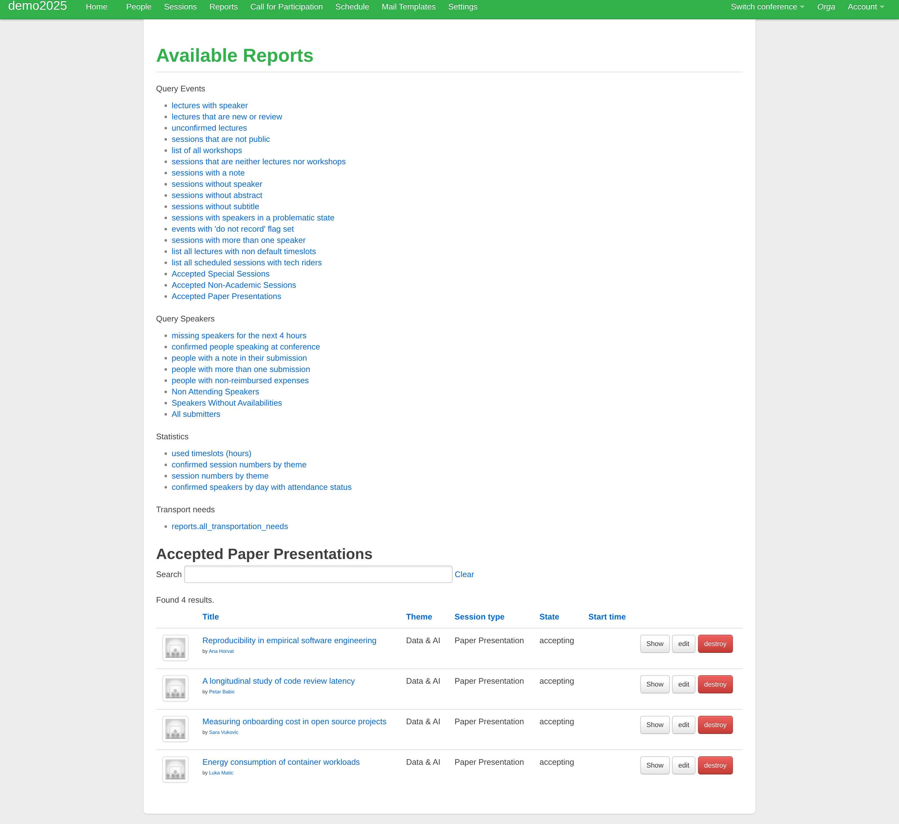
Figure 6.2 - "Accepted Paper Presentations". Read this list once more before you press Notify.
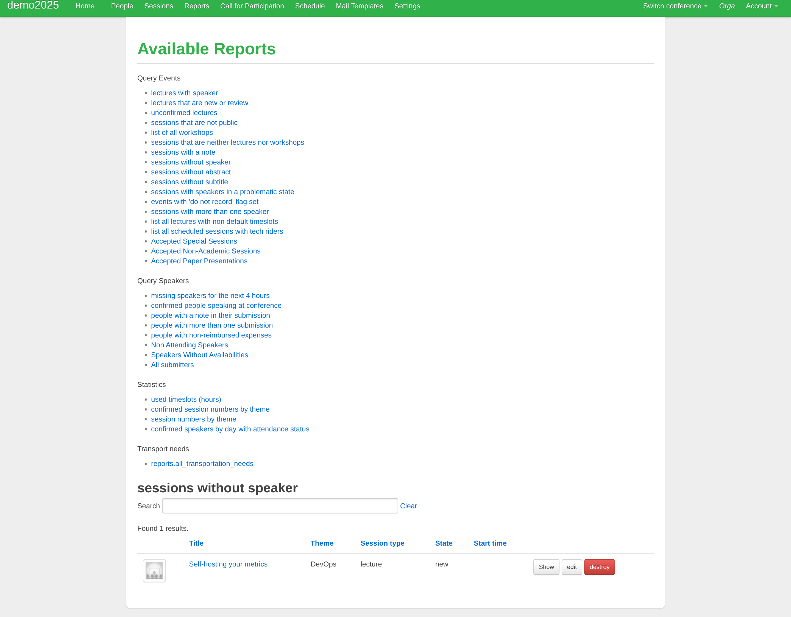
Figure 6.3 - A report is a normal, sortable, searchable list; every row links to the session itself.
6.3 Reports about speakers
Report
Use it to
speakers without availabilities
Chase everyone who never filled the availability form in. Run this before you start scheduling.
confirmed people speaking at conference
Get the definitive speaker list for badges and the info desk.
people with more than one submission
Notice that someone submitted three talks before you accept all of them.
people with a note in their submission
Work through special requests.
people with non-reimbursed expenses
See what still has to be paid, with a total.
missing speakers for the next 4 hours
During the event: who is expected on stage shortly.
non-attending speakers for the next 2 hours
During the event: who has not checked in at the info desk yet.
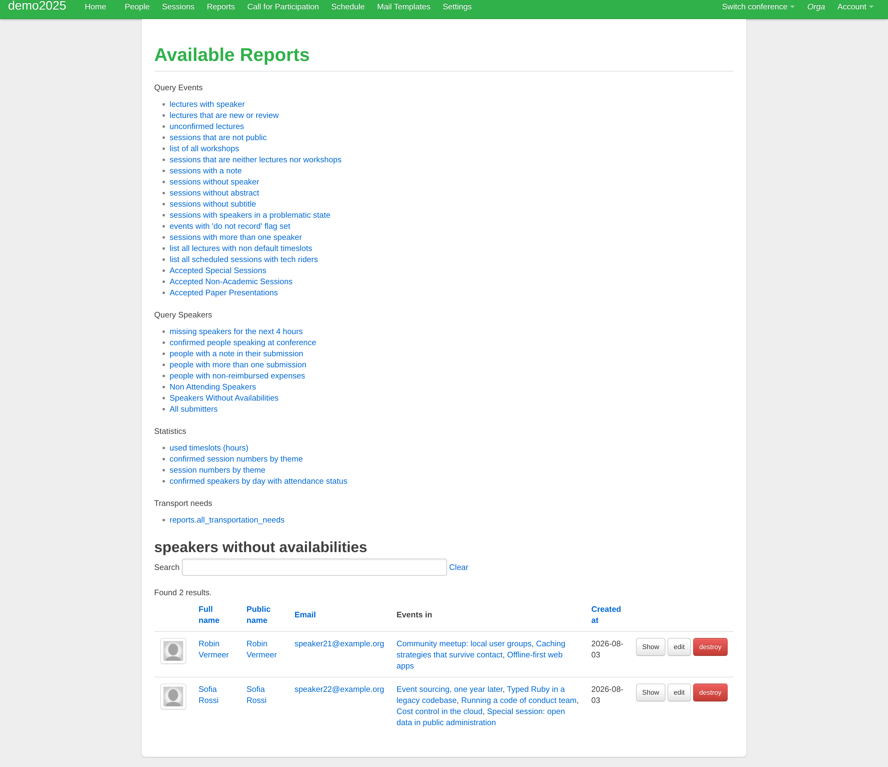
Figure 6.4 - "Speakers without availabilities". Each name links to the person page, where you can enter the availability for them.
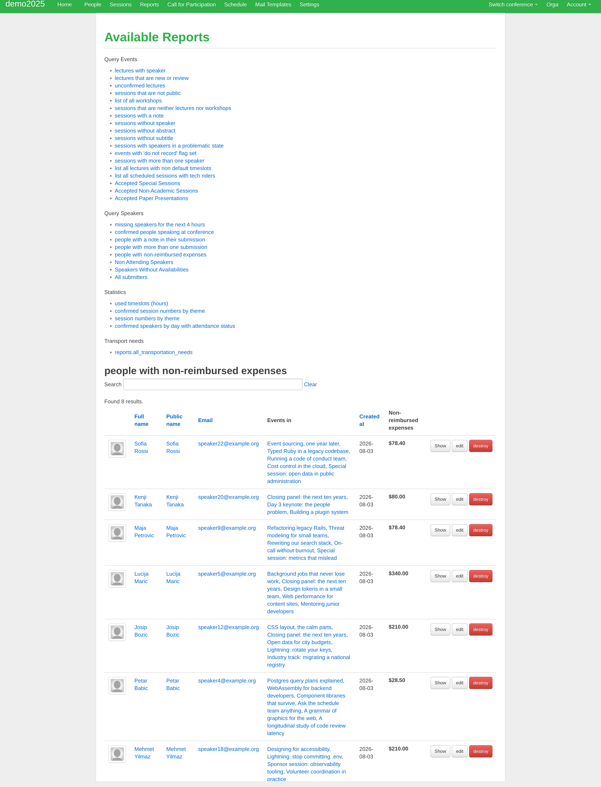
Figure 6.5 - Outstanding expenses, with the sum at the bottom.
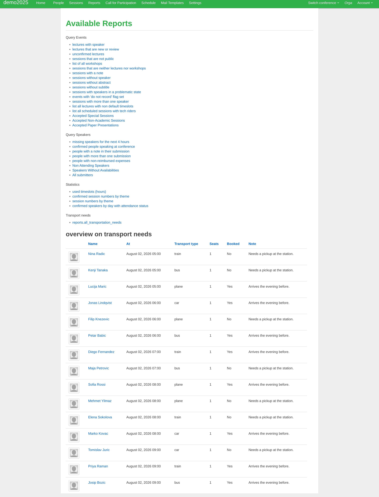
Figure 6.6 - All arrivals and departures in one list - the report the drivers print out.
6.4 Statistics
The statistics reports answer planning questions: how many hours of programme you have, and how the sessions spread over your themes and days.
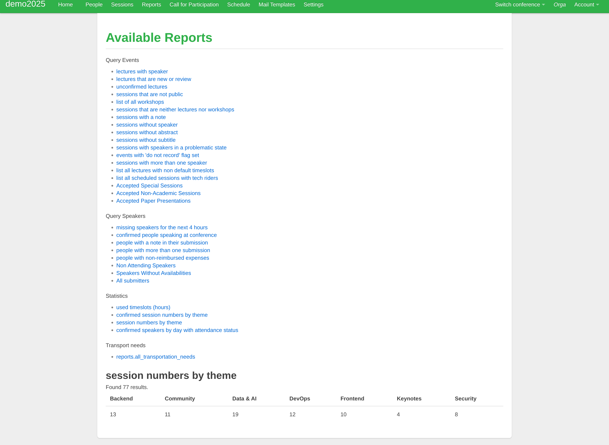
Figure 6.7 - Session numbers by theme. Compare it with confirmed session numbers by theme to see whether one theme lost too many speakers.
Live charts are on the conference dashboard (Home): the state of all submissions, and the language and gender breakdown.
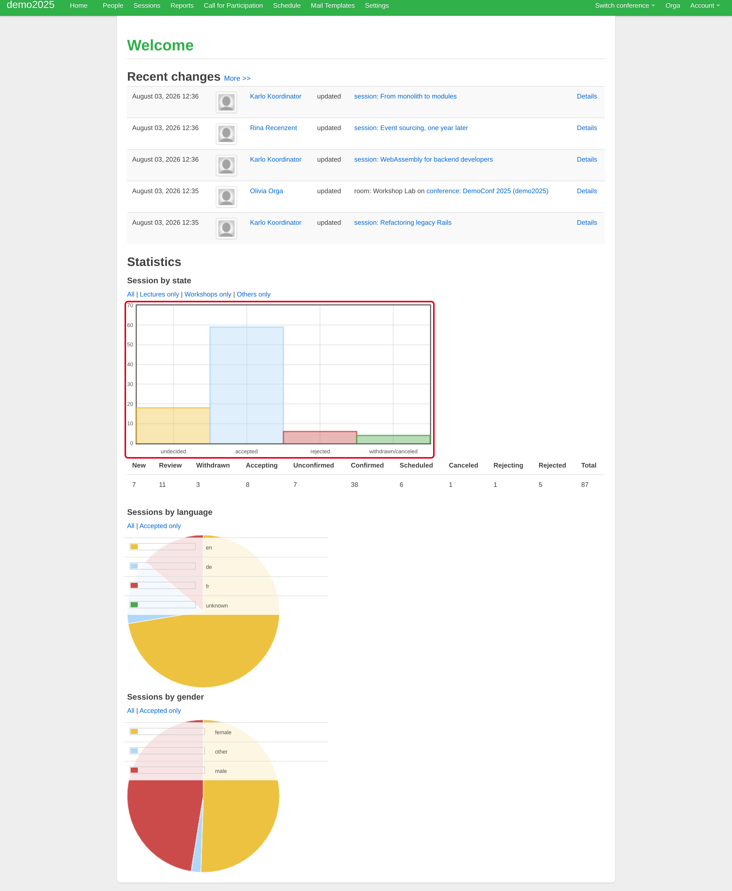
Figure 6.8 - Sessions by state, with the exact numbers in the table underneath. The links above the chart limit it to lectures, workshops or everything else.
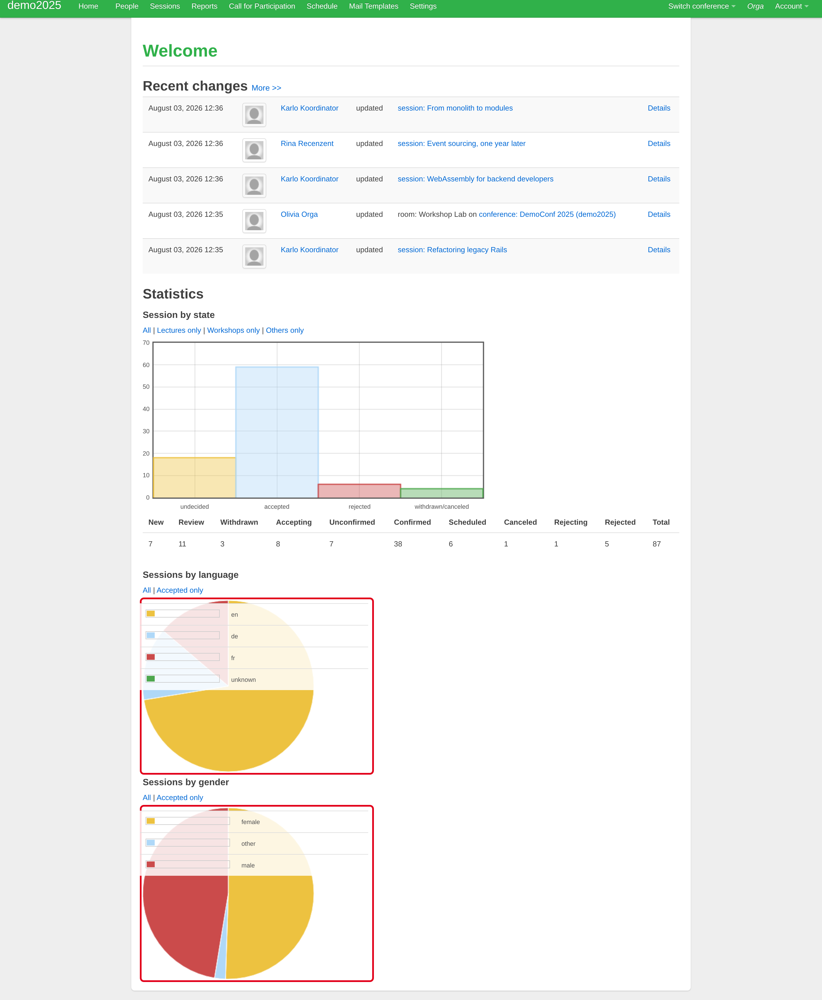
Figure 6.9 - Language and gender breakdown, either for all submissions or for the accepted ones only.Chapter 7
Schedule
The schedule is a grid: one column per room, one row per timeslot, one tab per day. You drag confirmed sessions into it, frab warns you when something does not fit, and then you publish it.
7.1 The grid
Open Schedule. Pick the day with the tabs at the top; use Toggle rooms to hide rooms you are not working on right now.
Figure 7.1 - The schedule grid. The small coloured square on each session is its theme colour.
Choose the day.
Drag a session from the unscheduled sessions box into a free spot in a room column, or move an already placed session.
Drop it. The change is saved immediately - there is no separate save button.
Check the colour of the session you just moved (see below) and fix anything that turned orange or red.
Only confirmed sessions can be scheduled
A session appears in the unscheduled box once it is confirmed. If a session you expect is missing, its speaker has probably not confirmed yet - check the session list for unconfirmed entries.
7.2 Reading the warnings
frab colours every placed session, and this is the single most useful feature of the grid:
Colour
Meaning
What to do
Green
No problem found.
Nothing.
Orange
A warning: a speaker is scheduled outside the availability they stated, a speaker has stated no availability at all, or a speaker is on stage in two sessions at the same time.
Move the session, or agree a new availability with the speaker and correct it on their person page.
Red
A hard conflict: two sessions use the same room at the same time.
Move one of them - this must be fixed before you publish.
Hover a warning to see which person it is about.
7.3 Unscheduled sessions
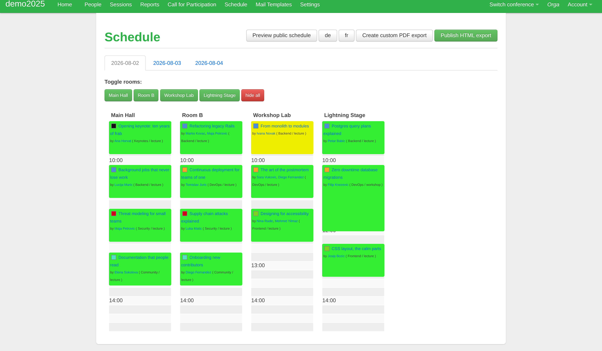
Figure 7.2 - Everything confirmed but not yet placed. Your goal is an empty box here.
7.4 Publishing
Fix every red conflict and as many orange warnings as you can.
Open Settings → Schedule, raise the schedule version (for example from 1.3 to 1.4) and tick Schedule public.
Use Preview public schedule in the schedule toolbar to check the result.
Tell the speakers with the Schedule announcement mail (chapter 9).
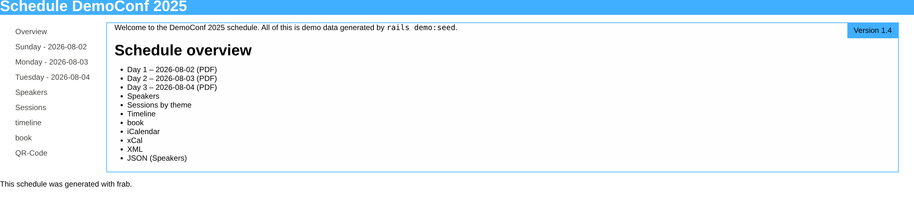
Figure 7.3 - The published schedule as the audience sees it, at /<acronym>/public/schedule.
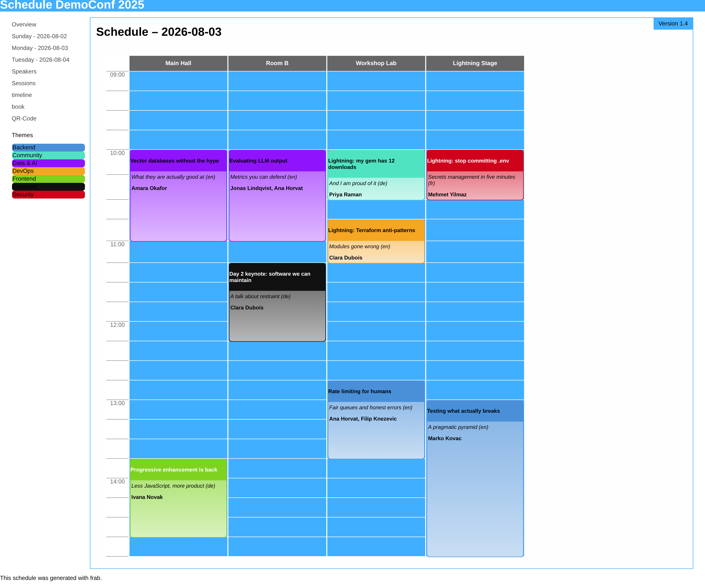
Figure 7.4 - One day of the published schedule. Visitors switch days with the tabs and click a session for the details.Figure 7.5 - A public session page: abstract, description, speakers, room and time, plus the audience feedback form if feedback is enabled.Figure 7.6 - The public speaker list, built from the public part of the speaker profiles.
Raise the version on every change
The schedule version is what tells apps, sponsors and the printer that something moved. Increase it every time you publish a change, and mention what changed in your announcement.
7.5 Exports
The toolbar above the grid has the export tools.
Figure 7.7 - Create custom PDF export builds a printable schedule; choose the days, rooms and paper format, then download the file.Figure 7.8 - Publish HTML export writes a static copy of the whole schedule that you can host anywhere - useful as a backup on the day itself.
The public pages also offer the schedule as iCal and XML/JSON, so mobile apps and your website can pick it up automatically.
Chapter 8
Reviews
Reviewing turns a pile of submissions into a decision you can defend. Reviewers score each submission against the criteria you defined, and the programme team selects on the result.
8.1 Two kinds of review
This installation distinguishes between them, and it is worth knowing which is which before you set the process up:
Expert reviews are written by the people you gave the reviewer role. They are the reviews the programme decision is based on, and they are the ones counted in the Number of expert reviews column.
Peer reviews are written by the authors themselves about other people's submissions - the usual "review three papers to have yours reviewed" arrangement. A session row in the session list stays highlighted red until its submitter has finished their peer reviews.
8.2 Preparing
Define your criteria in Settings → Reviewing (chapter 2.6). Three or four are plenty.
Add your reviewers under Account → Conference users with the role reviewer.
Move the submissions you want reviewed from new to review - individually on the session page, or for many at once with a bulk edit.
8.3 What a reviewer sees
A reviewer has a much smaller interface than you do: their menu contains only Sessions and Call for Participation. No settings, no schedule, no mail, no reports.
Figure 8.1 - The session list for a reviewer: every submission, read-only, with a single Show button and no state column.
Their actual work happens on the Session reviews tab, which is their personal queue.
Figure 8.2 - The reviewer's queue, with the average rating so far, the number of expert reviews, and a note on the ones they have already done.
What lands in a reviewer's queue
The queue is filtered, and the rules surprise people:
only sessions of type Paper Presentation and Special Session appear - lectures, workshops and lightning talks are never offered to reviewers;
rejected sessions are left out;
a reviewer never sees their own submissions or the ones they are a co-author of;
once an expert review exists, the session disappears from everybody else's queue - it stays visible only to the reviewer who wrote it.
The Filter by average rating box above the list narrows the queue down to a score range, which is how you find the borderline submissions quickly.
8.4 Writing a review
Clicking Show Ratings - or the Ratings tab of a session - opens the review form.
Figure 8.3 - A submission that has not been reviewed yet: an empty comment, every criterion on N/A, and Create review at the bottom.
Read the abstract; Toggle Description >> shows the full description as well.
Pick a score from 1 to 5 for every criterion you can judge, and leave the rest on N/A. An N/A is not counted as a zero - it is simply left out of the average.
Write a comment. One honest sentence is worth more to the programme team than the numbers.
Press Create review.
Press Rate next session in the Actions box to jump straight to the next submission in your queue - this is the fastest way to work through a stack of papers.
Figure 8.4 - A review that already exists. The buttons change to Update review and Delete rating; a reviewer may change their mind at any time.
8.5 Reading the result
As an orga or coordinator, the same Session reviews tab shows the full picture instead of a personal queue: every submission, the average per criterion and the overall average.
Figure 8.5 - Each review metric is its own sortable column, so you can rank by "audience fit" alone when you are filling a specific slot.
Two things are worth looking for besides the averages:
Sessions nobody reviewed. An empty average is not a bad score - decide those separately instead of letting them fall through.
Sessions the reviewers disagree about. frab highlights a row when the scores are far apart. These are the interesting ones; read the comments before you decide.
8.6 From review to decision
Sort by the average, or by the criterion that matters most for the slot you are filling.
Accept or reject each session on its own page, or in bulk from a filtered list.
If bulk notification is switched on, decide the whole programme first and then release all letters at once from Settings → Notifications (chapter 9.6).
Watch the state change: accepted sessions become unconfirmed until the speaker confirms.
Chapter 9
Mail templates
Almost all communication with speakers goes through frab. A mail template is a letter you write once, with placeholders, and send to a whole group of people - each of them getting their own session title, room and time.
Both use the same placeholders (Appendix A). Sections 9.2 to 9.5 cover mail templates; section 9.6 covers the notifications.
9.2 Creating a template
Open Mail Templates. The list shows every template of this conference.
Figure 9.1 - The templates of the conference. Give them names you will recognise in a hurry.
Press Add mail template and fill in three fields.
Figure 9.2 - The template form: Name (internal only), Subject and Content.
Name - what you will look for in the list later, e.g. Technical check reminder. Recipients never see it.
Subject - the subject line. Placeholders work here too; prefixing it with [%{conference}] makes your mails easy to filter for the recipient.
Content - the body, plain text. Write it as a real letter, and put the placeholders where the personal details belong.
Press Create mail template.
An existing template is changed the same way: open it from the list and press Edit mail template. Editing a template does not change any mail that has already been sent.
Figure 9.3 - Editing an existing template.
Placeholders
A placeholder is replaced per recipient. %{public_name} becomes the name of the person the mail goes to, %{event} the title of their session, and so on. The full list is shown next to the form, and repeated in Appendix A.
Figure 9.4 - The placeholder help sits next to the form while you write, so you never have to guess a name.
Type placeholders exactly
The syntax is %{name} - percent sign, curly braces, no spaces, all lower case. A misspelled placeholder is not an error: it is simply sent as-is, and your speakers receive a letter that says "Hi %{public_naem}". Always send one test mail to yourself first.
A template that works
Field
Example
Name
Technical check reminder
Subject
[%{conference}] Tech check for "%{event}"
Content
Hi %{forename},
please come to %{room} on %{date} at least 30 minutes before %{time}
for a short technical check (audio, video, your laptop).
If you need an adapter, tell us now and we will bring one.
The %{conference} tech team
Only use placeholders that exist for the recipient
%{room}, %{date} and %{time} are only filled in once the session actually has a slot in the schedule. Do not use them in a template you send to people whose sessions are not scheduled yet.
9.3 Sending a template
Click a template in the list to open it. The page shows the letter and, underneath, the Send Mail form.
Figure 9.5 - The template page. The text at the top is exactly what will be sent, with the placeholders still visible.
Read the subject and the body once more.
Choose the recipient group in the dropdown.
Press Send and confirm.
Figure 9.6 - The recipient group decides who gets the letter.
Group
Who receives the mail
All speakers involved in all confirmed sessions
Speakers whose session is confirmed but not yet scheduled. The right group for "please confirm your details".
All speakers involved in all unconfirmed sessions
Speakers who were accepted but have not confirmed yet. The right group for a reminder.
All speakers involved in all scheduled sessions
Speakers who have a slot in the published schedule. The right group for tech checks and room information.
There is no undo
Once you press Send the mails go out. Before a big send: create a copy of the template, set the recipient group to the smallest one you can, and send it to yourself first. Setting a BCC address in the conference settings (chapter 2.1) also gives you a copy of everything that leaves the system.
9.4 Writing to one speaker
For a single person, open their session and press Custom notification. You get the same kind of form, prefilled, for one recipient - and the text you send is stored on the session, so your colleagues can see what was said.
Figure 9.7 - A one-off mail about one session.
9.5 Writing to exactly the people in a list
This is the most flexible way to send mail, and the reason filters are worth learning. Anything you can filter for in the session list, you can write to.
Open Sessions and filter the list until it contains exactly the sessions you mean - for example all workshops in one theme, or everything still unconfirmed.
Under the table, click Send mail to all these people >>.
Choose the recipient group: Everyone on the list, Only submitters or Only coauthors.
Choose the template.
Press Send and confirm. The confirmation dialog names the number of sessions - check it.
Figure 9.8 - Sending a template to the people behind a filtered session list. The line above the form ("Listing 4 of 74 sessions") tells you how large the filtered set is.
9.6 The automatic notifications
The three decision letters live in Settings → Notifications and are sent by frab itself when a session changes state.
Figure 9.9 - Edit and send notifications. The Send block at the top releases the decisions you queued up; the edit block underneath holds the three texts, one set per language.
The three texts
Notification
Goes to
Must contain
Accept subject / body
Speakers of the sessions you accepted.
%{link} - the personal link the speaker uses to confirm. Without it they cannot confirm.
Reject subject / body
Speakers of the sessions you rejected.
-
Schedule subject / body
Speakers of confirmed sessions, once the schedule stands.
%{date}, %{time}, %{room}
Add one Language block per language your speakers use - everyone receives the version matching the language in their profile. default text fills a block with a reasonable starting text you can then edit.
Releasing the decisions
The Send block at the top of this page is the control desk for the whole conference. It counts the sessions waiting in each state and offers one button per group:
Button
What it does
Send acceptance notifications to N people involved in N sessions
Mails every speaker of a session in the state accepting, and moves those sessions to unconfirmed.
Send rejection notifications to N people involved in N sessions
Mails every speaker of a session in the state rejecting, and moves those sessions to rejected.
Send scheduling notifications to N people involved in N sessions
Mails every speaker of a confirmed session their date, time and room, and moves those sessions to scheduled.
Read the counts before you click
Each button states exactly how many people will receive a mail. These are the largest sends in the system and they cannot be undone - if a number looks wrong, leave the page and check the session list first.
Write the three texts before you accept your first session.
Make sure the acceptance contains %{link} and says by when you need an answer.
Decide the whole programme, so that everything sits in accepting or rejecting.
Come back here and release the acceptances and the rejections.
Later, once the schedule is fixed and public, release the scheduling notifications from the same page.
Test the whole path once with your submitter test account: submit, accept, read the mail, click the link, confirm.
A working order of operations
1. Write the notification texts. 2. Review and decide. 3. Send acceptances and rejections. 4. Wait for confirmations, reminding the stragglers with a mail template. 5. Build the schedule. 6. Publish it. 7. Send the schedule announcement. 8. Send a tech-check reminder shortly before the event. 9. After the conference, ask for slides with one more template.
Appendix A
Placeholder reference
These placeholders work in the subject and the body of mail templates and of the automatic notifications. They are replaced per recipient.
Placeholder
Replaced with
%{conference}
The title of the conference.
%{event}
The title of the session.
%{subtitle}
The subtitle of the session.
%{event_id}
The internal number of the session - handy when you ask people to quote it.
%{type}
The session type (lecture, workshop, ...).
%{track}
The theme of the session.
%{duration}
The length of the session.
%{public_name}
The public name of the recipient.
%{forename}
Their first name.
%{surname}
Their last name.
%{date}
The date of the session. Only once it is scheduled.
%{time}
The start time. Only once it is scheduled.
%{room}
The room. Only once it is scheduled.
%{link}
The personal confirmation link. Use it in the acceptance notification.
%{joinlink}
A link that lets somebody join the session as a co-speaker.
%{user_id}
The internal number of the recipient's account.
Appendix B - Session states at a glance
State
In the workflow
new
Submitted, untouched.
review
Being reviewed.
accepting
Accepted, letter not sent yet (bulk notification only).
unconfirmed
Accepted, speaker informed, waiting for their confirmation.
confirmed
Confirmed by the speaker, ready to be scheduled.
scheduled
In the schedule and announced.
rejecting
Rejected, letter not sent yet (bulk notification only).
rejected
Rejected and the speaker has been told.
withdrawn
Taken back by the speaker.
canceled
Dropped after acceptance.
Appendix C - Who may do what
Task
Submitter
Reviewer
Coordinator
Orga
Submit and edit own session
yes
yes
yes
yes
See all submissions
-
yes
yes
yes
Write reviews
-
yes
yes
yes
Edit any session and any person
-
-
yes
yes
Accept, reject, schedule
-
-
yes
yes
Conference settings, CfP, mail, reports
-
-
-
yes
All screenshots in this manual were taken from the demo conference demo2025. Your own installation may show slightly different fields depending on which features (feedback, expenses, transport needs, ticket server) are switched on for your conference.